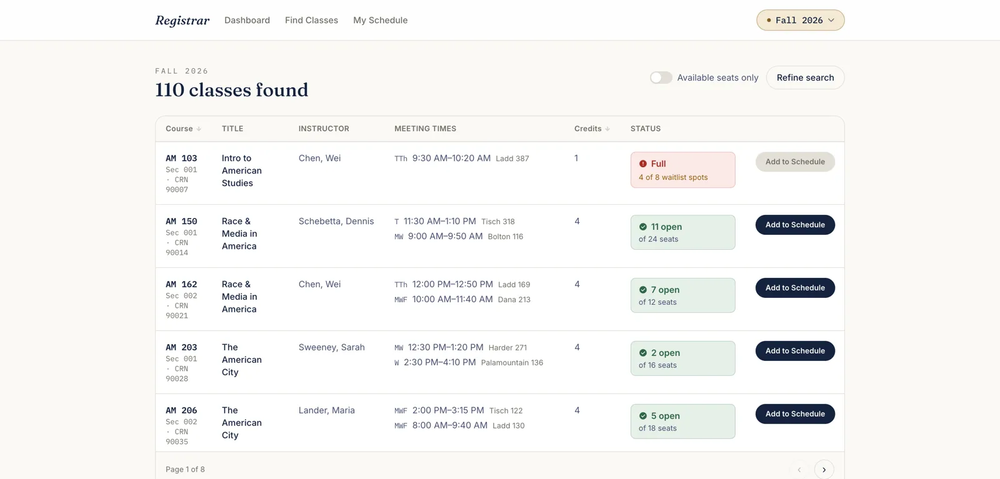

UX/UI Case Study
Registrar: Course Registration Redesign
Redesigned a Banner-style college registration system end to end, starting with a heuristic-evaluation audit and ending with a fully interactive prototype that fixes broken filters, ambiguous validation states, and buried information.